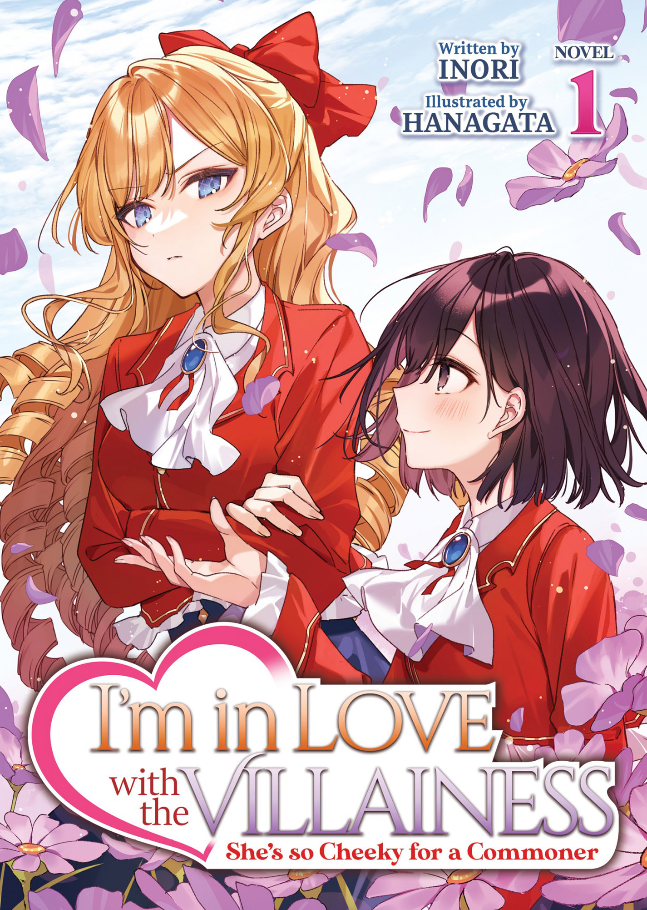

I'm in Love with the Villainess - She's so Cheeky for a Commoner
Novel Info's
Status: Ongoing
Genre: Comedy, Drama, Fantasy, Romance, Yuri
Author: Inori
Illustrator: Hanagata
Volumes: 1
Original Publisher: AINAKA SHUPPAN
English Publisher: Yen Press
Fan Translation: N/A
Description/Sypnosis
This girl claims to love me!? She’s so cheeky for a commoner!
I am Claire François, the heiress to a noble family in the Bauer Kingdom. In a time of social unrest where the kingdom’s commoners have begun to rise up, one peculiar commoner has even found the gall to say that she loves me!
Hmph! Don’t think for a moment that I’ll afford someone like you any attention!
Wha… What are you so happy about!?
Join us for a retelling of I’m in Love with the Villainess from the villainess’ perspective herself! More than just a retelling, She’s so Cheeky for a Commoner! will detail untold stories that could only be shared by Claire! Watch over Claire and see how her feelings for Rei change over the course of the story! Learn more about the characters close to Claire such as her dear friends, Pipi and Loretta, as well as her ever elusive roommate! With the spotlight on Claire, we are sure to learn more about the world and the dark secrets of noble society.
Download Links
Epub & Pdf